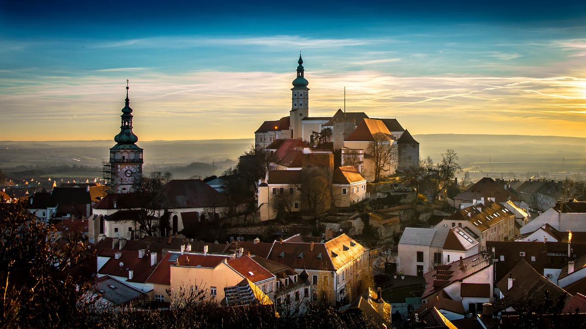

Zapewniamy szeroki wybór ofert
rodzinne wycieczki
Gwarantujemy relaksujący pobyt z rodziną lub znajomymi. Zapewniamy że twój urlop będzie należeć do udanych. Zaplanuj razem z nami atrakcje dla całej rodziny. To właśnie ten czas który poświęcisz swoim bliskim, partnerowi, dzieciom i znajomym.
kolonie i obozy
Niezapomniane przygody i doświadczenia dla twojego dziecka. Zabawa i edukacja jest najważniejsza dla naszych pociech. Zaplanuj razem z nami czas dla swoich dzieci pamiętając że posród zabaw i przygód najważniejsza jest edukacja.
wyprawy sportowe
Planowanie i organizacja wydarzeń sportowych to nasza pasja. Jeśli jesteś sportowcem i szukasz zorganizowanych wyjazdów z rówiesnikami o podbnych zainteresowaniach, trafiłeś w dobre miejsce. Zaplanuj razem z nami swój wyjazd sportowy już dziś.
Specjalizujemy się w organizowaniu wielu rodzai podróży
Pomysły i inspiracje – podpowiadamy gdzie pójść, pojechać i co zobaczyć. Nasza baza wycieczek liczy już ponad 200 propozycji! Opisujemy zarówno popularne, jak i mało znane kierunki wyjazdów o zróżnicowanym stopniu trudności, począwszy od tras spacerowych, gdzie można wybrać się nawet z dzieckiem w wózku, aż po drogi wspinaczki ferratowej. Podpowiadamy jak samemu bezpiecznie zrealizować górską wyprawę publikując szczegółowy opis trasy, informacje o dojeździe, komunikacji i parkingach. Podajemy najkorzystniejsze lokalizacje noclegowe z możliwością bezpośredniej rezerwacji online. Do opisów zagranicznych propozycji dołączamy słowniki z przydatnymi hasłami turystycznymi i górskimi.
Trudno znaleźć kogoś, kto nie lubi wypoczywać nad morzem. Nadmorskie tereny dają możliwość aktywnego wypoczynku, jak spacery nordic walking, długie wędrówki po plaży, wycieczki rowerowe w przybrzeżnych terenach leśnych, sport na plaży i mnóstwo innych. Drugim wariantem jest rzecz jasna bardziej leniwy wypoczynek w postaci wylegiwania się na plaży, dla wielu najchętniej w gorących promieniach słońca. Nad morzem każdy znajdzie coś dla siebie, a oprócz tego nadmorski mikroklimat bardzo pozytywnie wpływa na zdrowie większości osób. Oczywiście, nad morze warto wybierać się o każdej porze roku, nie tylko w letnim skwarze.

Uwielbiasz zabytki? Zwiedzaj razem z nami zabytki z całego świata, zaczynając od kraju poprzez kontynęt aż na kraniec świata. A może 7 cudów świata ? Zalicza się do nich piramidy egipskie, wiszące ogrody w Babilonie, posąg Zeusa Olimpijskiego w Olimpii, tzw. Kolosa Rodyjskiego, Mauzoleum w Halikarnasie, świątynię Artemidy w Efezie oraz latarnię morską na wysepce Faros. Inne wersje list siedmiu cudów świata zawierały jeszcze kolosy Memnona w Egipcie i mury Babilonu.
To idealna chwila by zaplanować urlop i... ruszyć w Polskę. Ta bowiem oferuje naprawdę wiele, przynajmniej jeśli chodzi o zabytki. Wśród nich zamki, fortyfikacje, inne pomniki historii. Do tego wiele ciekawych wydarzeń popularyzujących wcale nie nudną przeszłość. Warto zwiedzić wielką trójkę polskich zabytków – największe założenia zamkowe w Polsce, czyli: Zamek Krzyżacki w Malborku, Zamek Królewski na Wawelu i Zamek Książ w Wałbrzychu. Warto też zwiedzić zamek Krzyżtopór w Ujeździe.
